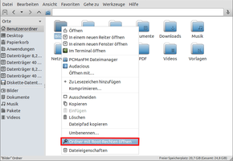

Benutzerdefinierte Aktionen
Dieser Artikel wurde für die folgenden Ubuntu-Versionen getestet:
Ubuntu 16.04 Xenial Xerus
Ubuntu 14.04 Trusty Tahr
Zum Verständnis dieses Artikels sind folgende Seiten hilfreich:
Installation von Programmen, optional
Ein Terminal öffnen, optional
Rechte für Dateien und Ordner ändern, optional
 Benutzerdefinierte Aktionen erweitern die Funktionalität des Dateimanagers PCMan File Manager und werden im Kontextmenü
Benutzerdefinierte Aktionen erweitern die Funktionalität des Dateimanagers PCMan File Manager und werden im Kontextmenü  angezeigt. Das erlaubt den schnellen Zugriff auf diverse Kommandos und Programme direkt aus dem Dateimanager heraus. In Kombination mit Skripten hat man mit dieser Funktion quasi unbegrenzte Möglichkeiten.
angezeigt. Das erlaubt den schnellen Zugriff auf diverse Kommandos und Programme direkt aus dem Dateimanager heraus. In Kombination mit Skripten hat man mit dieser Funktion quasi unbegrenzte Möglichkeiten.
Allerdings stehen diese benutzerdefinierten Aktionen erst ab der Version 1.2 oder neuer bzw. ab Ubuntu 14.04 zur Verfügung.
Grundlagen¶
Die verwendeten Dateien sind inhaltlich eine Erweiterung der klassischen .desktop-Dateien (Programmstarter) [1]. Sie müssen daher zwingend die Endung .desktop besitzen, während der Dateiname keine Rolle spielt und frei wählbar ist.
Dateien mit Aktionen müssen zwingend im Ordner ~/.local/share/file-manager/actions/ im Homeverzeichnis gespeichert werden
Das Grundgerüst folgt dem Schema DES-EMA  und ähnelt den von Unity/GNOME 3 verwendeten Quicklists (Jumplists) bzw. den Servicemenü-Einträgen bei KDE. Es besteht aus den beiden Abschnitten
und ähnelt den von Unity/GNOME 3 verwendeten Quicklists (Jumplists) bzw. den Servicemenü-Einträgen bei KDE. Es besteht aus den beiden Abschnitten [Desktop Entry] und [X-Action-Profile PROFILNAME]. Die wichtigsten Einträge sind hier in der Form SCHLÜSSEL=WERT angegeben:
[Desktop Entry] Type=Action Name=ENGLISCHE BESCHREIBUNG Name[de]=DEUTSCHE BESCHREIBUNG Icon=SYMBOLDATEI Tooltip=TEXT Profiles=PROFILNAME; [X-Action-Profile PROFILNAME] MimeTypes=MIME-TYP Exec=BEFEHL Name=BESCHREIBUNG
| Erläuterung | |
| Element | Beschreibung |
Type=Action | Beschreibt den Typ (obligatorisch). Klassische Programmstarter verwenden dagegen Type=Application. |
Name=BESCHREIBUNG | Text, der angezeigt werden soll. Für Übersetzungen wird in einer weiteren Zeile der Ländercode in eckigen Klammern angegeben. |
Icon=PFAD/ZUR/SYMBOLDATEI | Legt ein Bild fest, das angezeigt werden soll (optional) |
Tooltip=TEXT | sorgt für die Anzeige eines Tooltip (funktioniert nicht bei Lubuntu 14.04) |
Profiles=PROFILNAME; | Verweist auf den nächsten Abschnitt. Name frei wählbar, aber ohne Leerzeichen. Je nach Bedarf können auch mehrere Profile mit unterschiedlichen Aktionen definiert werden. |
[X-Action-Profile PROFILNAME] | Beschreibt das Profil und die durchzuführende/n Aktion/en. PROFILNAME entspricht der Bezeichnung aus PROFILES=. |
MimeTypes=MIME-TYP | Bei welchem Dateityp die Aktion angezeigt werden soll. Es können auch mehrere Dateitypen nach dem Muster TYP;TYP;TYP; angegeben werden. Praxisrelevant sind noch die Varianten all/allfiles für alle Dateien und inode/directory für Ordner. |
Exec=BEFEHL | Befehl, der ausgeführt werden soll, wenn dieses Element ausgewählt wird. |
Name=BESCHREIBUNG | Weitere Beschreibung. Wird nicht angezeigt, kann aber zur internen Dokumentation genutzt werden. |
Beispiele¶
Hier ein paar Beispiele für benutzerdefinierte Aktionen. Zum Erstellen kann ein beliebiger Editor [2] verwendet werden.
Hinweis:
|  |
| Ausgewählten Ordner mit Root-Rechten öffnen |
Ordner mit Root-Rechten öffnen¶
Diese Aktion ist besonders nützlich, da der Menüpunkt "Werkzeug -> Aktuellen Ordner als Root öffnen" in PCManFM nicht mehr vorhanden ist. Da ab Ubuntu 13.10 auch der erforderliche Befehl gksudo fehlt, benötigt man noch folgendes Paket [3]:
gksu (universe)
 mit apturl
mit apturl
Paketliste zum Kopieren:
sudo apt-get install gksu
sudo aptitude install gksu
~/.local/share/file-manager/actions/open_as_root.desktop:
[Desktop Entry] Type=Action Tooltip=Open Folder As Root Name=Open Folder As Root Name[de]=Ordner mit Root-Rechten öffnen Icon=gtk-dialog-authentication Profiles=on_folder; [X-Action-Profile on_folder] MimeTypes=inode/directory; Exec=/usr/bin/gksudo /usr/bin/pcmanfm %u Name=replacement for missing function
Datei via E-Mail versenden¶
Das hier beschriebene Beispiel setzt Thunderbird voraus. Es kann auch für andere E-Mail-Programme genutzt werden, wenn die Zeile Exec=... entsprechend angepasst wird.
~/.local/share/file-manager/actions/send_as_attachment.desktop:
[Desktop Entry] Type=Action Name=Send as attachment Name[de]=Als Anhang versenden Icon=stock_mail-compose Tooltip=Als Anhang versenden Profiles=as_attachment; [X-Action-Profile as_attachment] MimeTypes=all/allfiles; Exec=thunderbird -compose attachment=%f Name=Als Anhang versenden
Für Claws Mail lautet die Exec=...-Zeile entsprechend
Exec=claws-mail --compose --attach %U
Für Sylpheed ist einzutragen
Exec=sylpheed --attach %F
Als Hintergrundbild setzen¶
Um schnell ausprobieren zu können, wie ein bestimmtes Bild als Desktop-Hintergrund aussehen würde, kann man folgende Aktion verwenden. Zurücksetzen muss man den Hintergrund über die LXDE Einstellungen.
~/.local/share/file-manager/actions/set_as_wallpaper.desktop:
[Desktop Entry] Type=Action ToolbarLabel=Set As Wallpaper ToolbarLabel[de]=Als Hintergrundbild Name=Set As Wallpaper Name[de]=Als Hintergrundbild setzen Icon=gtk-orientation-landscape Profiles=on_image; [X-Action-Profile on_image] MimeTypes=image/*; Exec=pcmanfm -w %f Name=only if pcmanfm is used for desktop management Name[de]=funktioniert nur, wenn PCManFM den Desktop verwaltet
Dokumente drucken¶
Um ODT- und DOC- bzw. PDF-Dateien auf dem Standard-Drucker ausdrucken zu können, werden zwei getrennte Aktionen verwendet.
~/.local/share/file-manager/actions/sendto_printer.desktop:
[Desktop Entry] Type=Action Name=Print Document Name[de]=Dokument drucken Icon=printer Profiles=Office;Text_PDF; [X-Action-Profile Office] MimeTypes=application/vnd.openxmlformats-officedocument.wordprocessingml.document;application/msword;application/vnd.oasis.opendocument.text; Exec=libreoffice --headless -p %f Name[de]=Officedateien drucken [X-Action-Profile Text_PDF] MimeTypes=text/plain;application/pdf; Exec=lp %f Name[de]=PDF- u. Textdruck
PDF aus LaTeX Dateien erzeugen¶
Um aus LaTeX-Dateien PDF-Dateien zu erzeugen und anzuzeigen
~/.local/share/file-manager/actions/pdflatex.desktop:
[Desktop Entry] Type=Action Name=pdflatex Name[de]=pdflatex Icon=application-pdf Profiles=pdflatex; [X-Action-Profile pdflatex] MimeTypes=text/x-tex Exec=bash -c 'pdflatex -jobname "$(basename %f .tex)" -output-directory "$(dirname %f)" %f ; xdg-open "$(dirname %f)"/"$(basename %f .tex)".pdf' Name[de]=pdflatex ausführen und Ergebnis anzeigen
Für die Verwendung bei Dateinamen mit Leerzeichen, muss der Befehl in ein Skript ausgelagert werden. In der Zeile Exec= wird dann der Pfad zu folgendem Skript eingetragen.
1 2 3 4 5 | #!/bin/bash ## Skript tex2pdf - Latex-Dateien in PDF umwandeln und anzeigen pdflatex -jobname "$(basename "$1" .tex)" -output-directory "$(dirname "$1")" "$1" xdg-open "$(dirname "$1")"/"$(basename "$1" .tex)".pdf |
Zu Audacious hinzufügen¶
Da Audacious bei Lubuntu als Standard-Audioplayer eingesetzt wird (und daher keine eigene Aktion zum Abspielen benötigt wird), fügt die folgende Aktion MP3- und OGG-Dateien zur Wiedergabeliste hinzu. Weitere Audioformate können in der Zeile MimeTypes= ergänzt werden.
~/.local/share/file-manager/actions/add2audacious.desktop:
[Desktop Entry] Type=Action Tooltip=Add to playlist Tooltip[de]=Zu Wiedergabeliste hinzufügen Name=Enqueue to Audacious Name[de]=Zur Audacious-Playliste hinzufügen Icon=audacious Profiles=on_audio; [X-Action-Profile on_audio] MimeTypes=audio/mpeg;audio/ogg; Exec=audacious -e %F Name=add once, play later...
Papierkorb leeren¶
Mit Lubuntu 14.04 ist es möglich, via "Einstellungen -> Desktop-Einstellungen -> Desktop-Symbole" ein Symbol für den Papierkorb auf dem Desktop anzuzeigen. Aber leider lässt sich der so sichtbar gewordene Papierkorb nicht wie gewohnt über das Kontextmenü löschen. Um diese Funktion nachzurüsten, muss folgendes Paket installiert werden:
trash-cli (universe)
mit apturl
Paketliste zum Kopieren:
sudo apt-get install trash-cli
sudo aptitude install trash-cli
~/.local/share/file-manager/actions/empty_trash.desktop:
[Desktop Entry] Type=Action Name=Empty Trash Name[de]=Papierkorb leeren Icon=user-trash Profiles=on_trash; [X-Action-Profile on_trash] MimeTypes=inode/directory; Basenames=trash:/// Exec=/usr/bin/trash-empty Name=clear user trash folder
Dateien sicher löschen¶
Für diese Aufgabe werden die beiden folgenden Programme und ein Shell-Skript benötigt.
wipe (universe)
zenity (universe)
mit apturl
Paketliste zum Kopieren:
sudo apt-get install wipe zenity
sudo aptitude install wipe zenity
Das Shell-Skript:
1 2 3 4 5 6 7 8 9 10 11 12 13 14 15 16 17 18 19 20 21 22 23 24 25 | #!/bin/bash zenity --question --title="Sicher löschen" --text="Diese Dateien/Ordner entgültig löschen?\n\nHinweis: Keine Wiederherstellung möglich!"; if [ $? != 1 ]; then param=$#; zaehler=0; fcnt=1; ( while [ "$zaehler" != $param ] do status=`expr $fcnt - 1`; echo $(($status*100/$param)) ; echo "# Lösche: $1" ; wipe -f -q -Q 1 -R /dev/zero -S r -r "$1"; echo $(($fcnt*100/$param)) ; echo "# Gelöscht: $1" ; shift fcnt=`expr $fcnt + 1`; zaehler=`expr $zaehler + 1`; done ) | zenity --progress \ --title="Sicher löschen" \ --text="Initialisiere..." \ --percentage=0 \ --auto-close fi |
Das Skript erzeugt mittels Zenity eine Sicherheitsabfrage und einen Fortschrittsbalken (nur bei mehreren Dateien und/oder Ordnern) und schließt das Warnfenster nach erfolgreichem Löschen automatisch. Man speichert es beispielsweise als ~/bin/pcmanfm_secure_delete.sh und setzt die Ausführrechte [4][5]:
chmod u+x ~/bin/pcmanfm_secure_delete.sh
Nun fehlt noch der Inhalt der Datei für diese Aktion (BENUTZERNAME bzw. Speicherort/Name des Skripts bitte anpassen):
[Desktop Entry] Type=Action Tooltip= Name=Secure delete Name[de]=Sicher löschen Icon=gtk-dialog-warning Profiles=on_wipe; [X-Action-Profile on_wipe] MimeTypes=all/allfiles;inode/directory; Exec=/home/BENUTZERNAME/bin/pcmanfm_secure_delete.sh %F Name=external script required
Dabei werden die zu löschenden Dateien und Ordner zunächst mit Nullen überschrieben und dann gelöscht.
Netzwerkfreigaben¶
Achtung!
Aus Sicherheitsgründen sollte niemals das eigene Homeverzeichnis freigegeben werden, sondern nur ein einzelner Ordner innerhalb des Homeverzeichnisses. Dazu bietet sich beispielsweise der bereits vorhandene Ordner ~/Öffentlich/ an.
Grundlage ist die Kenntnis des Artikels net usershare. Dabei handelt es sich um die "persönliche Freigabe" eines Ordners im eigenen Homeverzeichnis, die nicht mit einer systemweiten Freigabe verwechselt werden sollte (siehe Samba Server GNOME) – auch wenn sie praktisch die gleiche Funktionalität bietet.
Außerdem muss man vorab dafür sorgen, dass
der Zugriff auf das eigene Homeverzeichnis überhaupt möglich ist und
die Rechte des Ordners, der später freigegeben werden soll, anpassen.
Dazu dienen folgende Befehle im Terminal:
chmod 755 $HOME chmod 777 $HOME/ORDNERNAME
Netzwerkfreigaben erstellen¶
~/.local/share/file-manager/actions/create_share.desktop:
[Desktop Entry] Type=Action Name=Create Network Share Name[de]=Netzwerkfreigabe erstellen Icon=gtk-connect Profiles=create_share; [X-Action-Profile create_share] MimeTypes=inode/directory; Exec=net usershare add %w %f "" Everyone:F guest_ok=y
Möchte man keinen Vollzugriff erlauben, sondern nur Leserechte erteilen, ändert man die letzte Zeile wie folgt ab:
Exec=net usershare add %w %f "" Everyone:R guest_ok=y
Netzwerkfreigaben entfernen¶
~/.local/share/file-manager/actions/remove_share.desktop:
[Desktop Entry] Type=Action Name=Remove Network Share Name[de]=Netzwerkfreigabe entfernen Icon=gtk-disconnect Profiles=remove_share; [X-Action-Profile remove_share] MimeTypes=inode/directory; Exec=net usershare delete %w
Nautilus-Actions Configuration Tool¶
Wem bei der Lektüre manches sehr vertraut vorkommt, ist auf der richtigen Spur: auch der Dateimanager Nautilus verwendet benutzerdefinierte Aktionen, die als "Nautilus-Aktionen" bezeichnet werden. Für LXDE/Lubuntu ist folgendes Paket – trotz des irreführenden Namens – interessant:
nautilus-actions (universe)
mit apturl
Paketliste zum Kopieren:
sudo apt-get install nautilus-actions
sudo aptitude install nautilus-actions
Mit dem enthaltenen Programm Nautilus-Actions Configuration Tool lassen sich benutzerdefinierte Aktionen mit einer grafischen Oberfläche verwalten. Bei Bedarf kann man auch neue anlegen und vorhandene bearbeiten. Praktisch ist weiterhin die Möglichkeit, Skripte in Kategorien zusammenzufassen (also als Untermenü im Kontextmenü anzeigen).
Nach der Installation ist es bei Ubuntu-Varianten mit einem Anwendungsmenü unter "System -> Einstellungen für Nautilus-Aktionen" zu finden. Manche der vielfältigen Einstellungsmöglichkeiten erschließen sich aber erst, wenn man sich intensiv mit der eingangs erwähnten DES-EMA-Spezifikation auseinander setzt.
Eine Anmerkung am Rande: Neu erstellte Dateien erhalten automatisch Dateinamen wie 44c437e3-6d88-482b-a193-eabcb4c5df5a.desktop, die man mit einem Dateimanager bei Nichtgefallen einfach umbenennen kann.
| Nautilus-Actions Configuration Tool unter Lubuntu 14.04 |
Links¶
Add right click menu to Empty Trash
- Blogbeitrag, 11/2014Actions
- Blogbeitrag, 04/2014Creating Custom PcManFM Context Menus in Lubuntu 14.04
- Blogbeitrag mit ausführlichen Hintergrundinformationen und Beispielen, 03/2014PCMan File Manager - Hauptartikel
- Erstellt mit Inyoka
-
 2004 – 2017 ubuntuusers.de • Einige Rechte vorbehalten
2004 – 2017 ubuntuusers.de • Einige Rechte vorbehalten
Lizenz • Kontakt • Datenschutz • Impressum • Serverstatus -
Serverhousing gespendet von